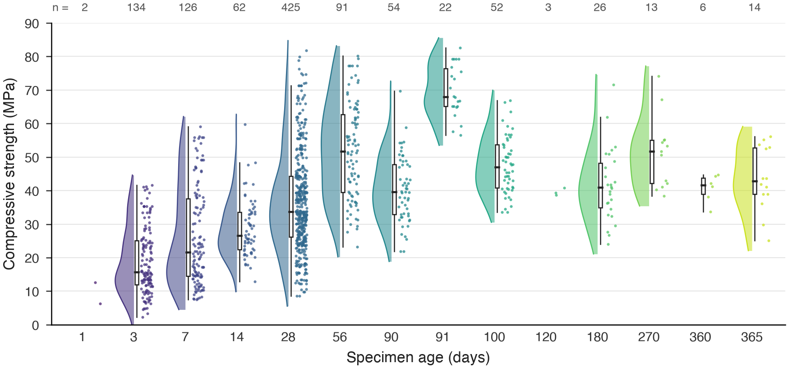
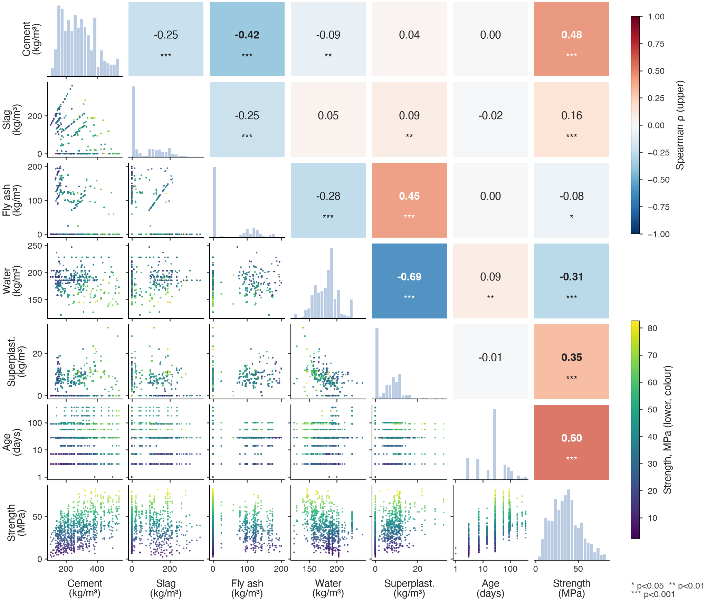
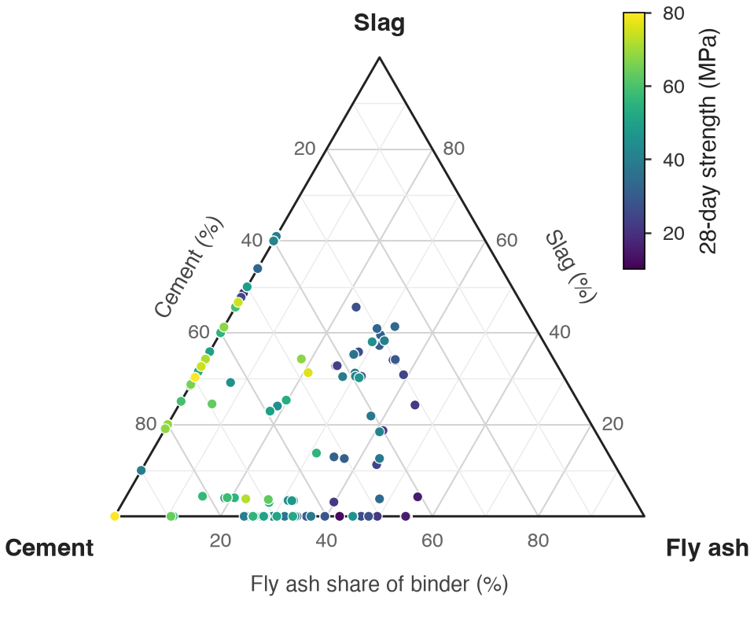
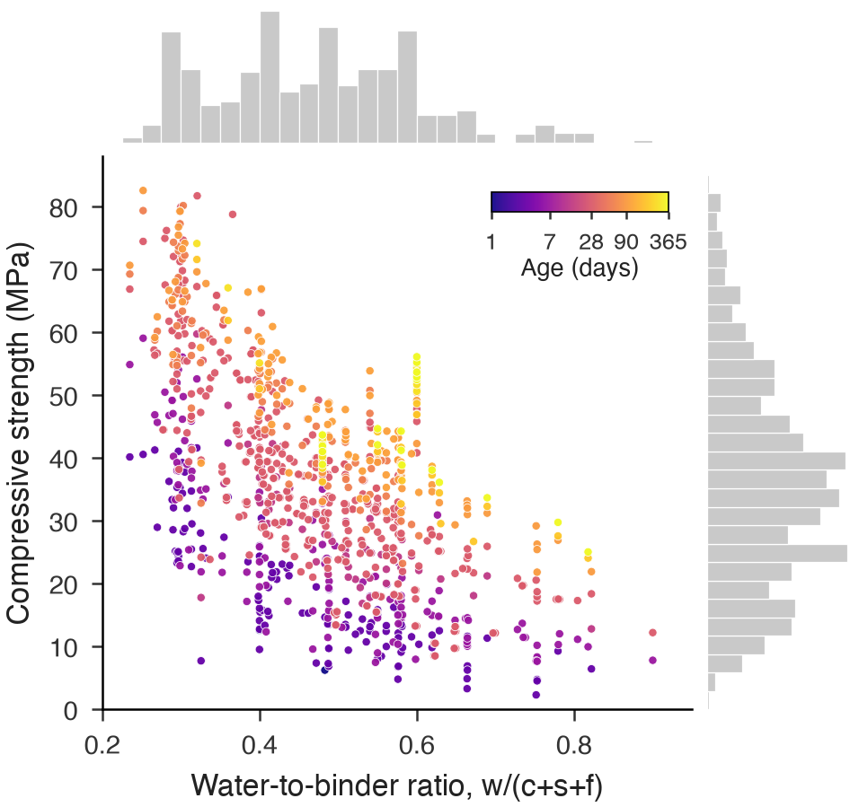
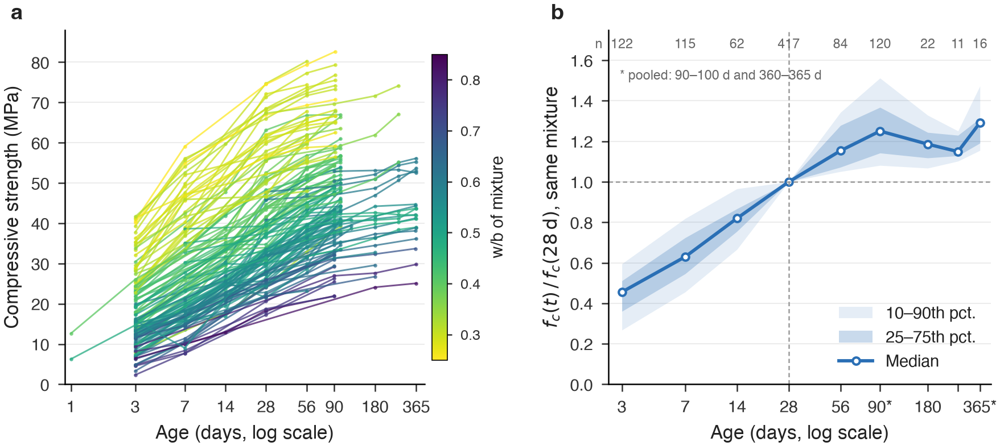

Descriptive statistics for the UCI concrete dataset (Yeh, 1998). Eight inputs: seven mixture components (kg/m³) and specimen age (days). One output: compressive strength (MPa). All numbers are computed from the original Concrete_Data.xls.
Compressive strength has a median of 34.4 MPa and ranges from 2.3 to 82.6 MPa. Age is strongly right-skewed (skewness 3.26). Blast furnace slag, fly ash and superplasticizer are zero in 45%, 55% and 37% of specimens respectively.
02Test ages
Specimens were tested at 14 different ages, from 1 to 365 days. 28 days is the most common age (425 specimens, 41%), and 73% of specimens were tested at 28 days or earlier. Some ages have very few specimens: 1 day (2), 120 days (3) and 360 days (6).
Specimens per test age
Compressive strength by test age
Box shows Q1–Q3, line is the median, whiskers are min–max, dot is the mean.
03Correlations
Pairwise correlations between all nine variables. Against compressive strength, cement has the largest Pearson coefficient (r = 0.50), followed by superplasticizer (0.37) and age (0.33). Age has a Spearman coefficient of 0.60. Among the inputs, the strongest pair is water and superplasticizer (r = −0.66).
Correlation matrix
Correlation with compressive strength
Pearson rSpearman ρ
All coefficients are significant at p < 0.05 (n = 1,030).
04Dataset notes
No missing values. All 1,030 rows have all nine variables.
Repeated mixtures. The 1,030 rows come from 428 unique mixture proportions, and many mixtures were tested at more than one age. 25 rows are exact duplicates of another row.
Units. Component amounts are in kg per m³ of mixture, age in days and strength in MPa. The data is raw and unscaled.
05Figures
Static figures for the report. Vector PDFs and 300 dpi PNGs are in figures/eda/.

Figure 1. Distribution of compressive strength at each of the 14 test ages. Each cloud is a kernel density estimate (shown when n ≥ 10), the box marks Q1–Q3 with the median, whiskers extend to 1.5 × IQR, and dots are individual specimens. Sample sizes are listed above.

Figure 2. Pairwise relationships. Diagonal: histograms. Lower triangle: specimen scatter coloured by compressive strength (age on a log axis). Upper triangle: Spearman rank correlation, with significance stars.

Figure 3. Binder composition of the 425 specimens tested at 28 days, as mass shares of cement, slag and fly ash in the total binder. Colour is 28-day strength.

Figure 4. Compressive strength against water-to-binder ratio, w/(c+s+f), for all 1,030 specimens. Colour is specimen age on a log scale; marginal histograms show each variable's distribution.

Figure 5. (a) Strength against age for each mixture tested at three or more ages, coloured by its water-to-binder ratio. (b) Strength at each age divided by the same mixture's 28-day strength: median, interquartile range and 10th–90th percentile range. Ages 90–100 d and 360–365 d are pooled.